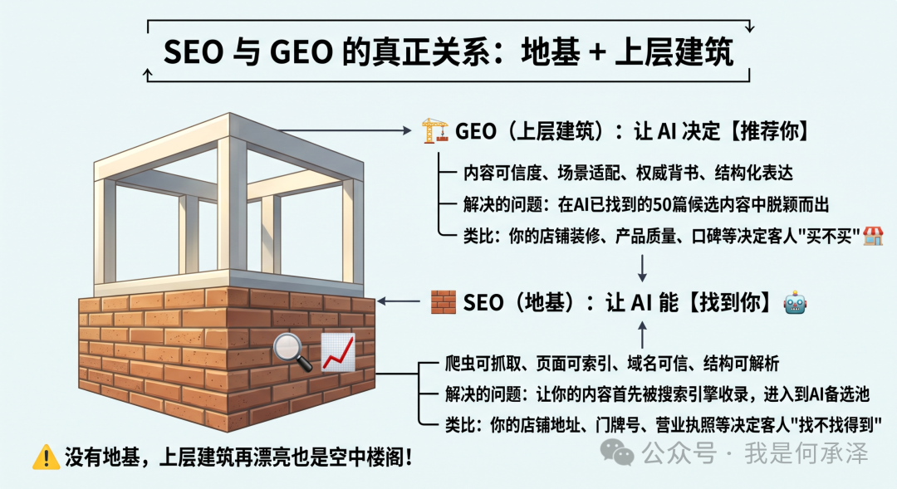
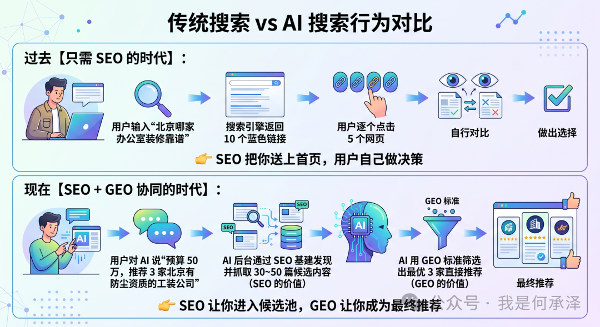
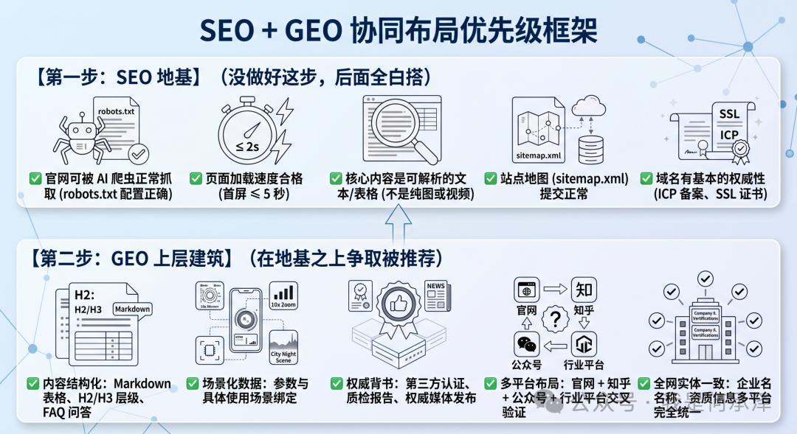

⏱️ 3 分钟速读版>
1. 纠正一个认知误区：GEO 不是 SEO 的替代品。SEO 让 AI 能找到你，GEO 让 AI 决定推荐你。没有 SEO 作为前提，GEO 毫无用处。
2. 两者是地基与上层建筑的关系：SEO 是被发现的基础设施（爬虫抓取、搜索收录），GEO 是被优先推荐的竞争力（信任度、场景匹配、结构化表达）。
3. AI 搜索改变了流量的"最后一公里"：用户从"在 10 个链接里做选择题"变成"让 AI 直接给最优答案"。
大家好，我是何承泽。欢迎来到《企业 GEO 实战指南：如何让 AI 优先推荐你的品牌与产品》系列教程的第一讲。写这套教程，就是想用人人都能听懂的大白话，带你搞懂什么是 GEO、它能带来什么商业结果，以及中小企业如何低成本把 GEO 落地。作为开篇，我们先从纠正一个全网普遍存在的错误认知开始。
一、 纠正一个危险的认知："GEO 取代 SEO"
打开任何一个自媒体平台，搜索"GEO"，你大概率会看到这样的标题：
"SEO 已死！GEO 才是未来！"
"别再做 SEO 了，赶紧转 GEO！"
"从 SEO 到 GEO：一场不可逆的大洗牌"
这些说法，从根本上就是错误的。
为什么？因为他们偷偷的混淆SEO和GEO各自解决的问题。让我用一个简单的比喻讲清楚：

【配图：SEO 与 GEO 的分工与关系】
说白了：
• SEO解决的是"被发现"的问题。通过SEO，让你发布的内容能把网络爬虫获取，并被搜索引擎正确收录，让你企业的内容对搜索引擎和AI系统来说是"存在的"。
• GEO解决的是"被推荐"的问题。在AI已经找到你的前提下，通过合理的内容编排、权威背书、结构化表达等方法，让 AI 在最终生成答案时优先选择引用你发布的内容。
⚡ 关键认知：如果你的官网或者发布的内容连爬虫都不去抓取（例如关闭web网站，做了个App），那你后续做再多的GEO内容优化都是白费。AI根本看不到你，何谈推荐你？
所以正确的策略不是"从 SEO 转向 GEO"，而是"SEO 打地基 + GEO 建上层"，两者协同发力。
二、 AI 搜索改变了什么？——"最后一公里"的革命
纠正了认知误区之后，我们再来看 AI 搜索到底改变了什么。

【配图：搜索行为从选择题到最优解】
在传统搜索时代，只要通过SEO，将信息做到搜索页面的首页，用户会自己点进来看，你就有机会获得流量转化。在这个流程中，用户做筛选和裁判。
在AI搜索时代，AI 代替用户做了筛选和决策。AI 会从全网找到 30~50 篇候选内容（靠 SEO），然后根据用户的提问，从候选内容中选择合适的答案推荐给用户（靠 GEO）。在这个流程中，AI 在做筛选和裁判。
核心变化：过去你只需要"被找到"（SEO），用户会自己来挑你；现在你不仅要"被找到"（SEO），还要"被选中"（GEO），因为 AI 帮用户做了筛选。
所以，GEO 不是取代 SEO，而是在 SEO 基础上增加了一个新的竞争维度。
三、 SEO 与 GEO 各自的优化重点
理解了两者的协同关系之后，我们来看它们各自聚焦的优化重点有何不同：
⚡ 经验观察：在实际运营中，很多企业花了大量资源做"GEO优化"，写了很好的结构化文章、做了权威背书等，但AI搜索就是不推荐。排查后发现根源是SEO的问题，最突出是将内容发布到了错误的渠道，例如企业将内容发布到权威媒体的APP上，但APP的内容很难被搜索引擎爬取收录。
GEO 做得再好，如果 SEO 地基塌了，AI 看不见你，一切白搭。
四、 为什么现在是 SEO + GEO 协同布局的好时机？
我有一个做装修行业的朋友说："现在AI很厉害，但是现在还是自媒体，短视频比较重要。你说的GEO，等过两年再看行不行？"
基于对AI发展的趋势，我对他的建议是现在就开始，原因有三：
1. 用户行为的转移速度可能超出预期
2026 年3月，中国AI原生App整体月活超过4.4亿，其中明确标注为"AI搜索/生成式引擎”的DAU（日活跃数量）在3.2亿左右。这个数据意味着AI搜索的结果已经实实在在影响了中国人的日常行为。所以对于企业和品牌来说，不仅需要在传统搜索里有排名（SEO），还需要在 AI 的推荐答案里有位置（GEO）。
2. 当前处于 AI 搜索的早期红利阶段
回顾互联网历史，每一次新平台兴起都有早期红利：
• 2012 年公众号初期，发什么都容易获得关注；后来演变为成熟的商业化投放。
• 2018 年抖音电商初期，随手发视频就有销量；后来进入精细化投流阶段。
今天的 AI 搜索，正处于类似的早期阶段。
各大 AI 巨头为了争夺用户，正在积极优化AI搜索的结果，尚未全面开启付费竞价排名。如果你现在做好 SEO 基建，并优化 GEO 内容，可能会获得这波AI搜索的红利，获客成本远低于未来。
3. 早期内容积累有先发优势
AI 大模型的训练和版本更新有周期性。如果你的品牌和产品在早期就被大量AI索引并沉淀进了大模型的训练数据中，AI 可能会形成一定的"先验认知"。后来的竞争者想要替换你的位置，需要付出更多的内容建设成本。
五、 正确的行动框架：先 SEO 后 GEO，两手都要硬
基于以上分析，我总结了一个清晰的行动优先级框架：

【配图：先 SEO 后 GEO 行动框架】
一句话：SEO 保证你"在牌桌上"，GEO 帮你"赢牌局"。两手都要硬，但必须先有牌桌。
六、 课后自查
【课后自查实操】
1. SEO 自查：
用浏览器打开你的企业官网，按 Ctrl+U 查看源代码。页面是否有大量可读的文字内容？还是基本全是图片和 JavaScript？如果是后者，你的 SEO 地基可能存在严重问题。
2. GEO 自查：
打开你手机里的 DeepSeek、豆包、腾讯元宝 任意一个 AI 工具，输入你们行业客户最常问的一句话（例如："常州有哪些靠谱的自动化包装机厂家？"）。看看 AI 给出的推荐里有没有你的公司？如果没有，想想是"AI 找不到你"（SEO 问题）还是"找到了但没选你"（GEO 问题）。
把搜索结果截屏保存下来，带着你的判断，我们进入下一讲！
在下一讲中，我将为你剖析 AI 搜索的完整工作流程——从"用户提问"到"AI 给出推荐"的全链路拆解。我们下期见！